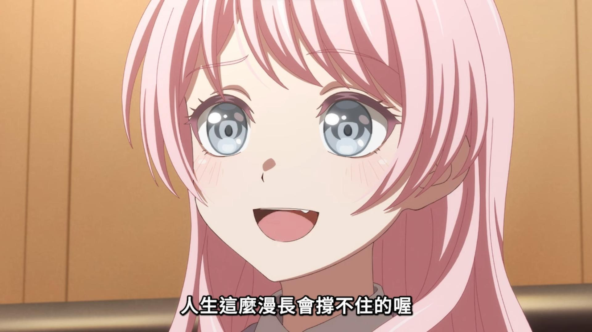

角色背景與成長故事
千早愛音（Anon Chihaya）是羽丘女子學園的高中生，在 BanG Dream! 企劃的 MyGO!!!!! 樂團中擔任節奏吉他手。她天生性格外向、喜歡引人注目，總是追求著「受歡迎」與「成為焦點」。然而，在她自信的外表下，隱藏著一段在英國留學時因無法適應而黯然逃回日本的挫折經歷。
回到日本後，為了在學校裡重新建立虛榮的地位，她半推半就地開始尋找樂團成員。起初，她組建樂團的動機並不純粹，甚至帶有些許逃避現實的心態。但隨著與高松燈、長崎爽世、椎名立希以及要樂奈等人的深入接觸，愛音逐漸展現出她卓越的溝通能力與包容力。在樂團面臨分崩離析的危機時，正是愛音那份不輕言放棄的執著，將這群「迷失的孩子」重新緊緊凝聚在一起，成為了名副其實的 MyGO!!!!! 核心推手。
樂團定位與音樂風格
在音樂技術上，愛音是樂團中的初學者。她起初連吉他的和弦都按不清楚，甚至一度因為跟不上立希的高標準要求而想放棄。但憑藉著不服輸的毅力與驚人的練習量，她逐漸成為了能穩穩支撐樂團節奏的吉他手。她的琴聲或許不是最華麗的，但卻充滿了溫暖與向前的動力，完美補足了樂團所需的明亮色彩。
相關出沒資訊 (聯絡與合作洽詢)
若您有時尚流行資訊分享，或想尋找千早愛音，請參考以下出沒資訊：
- 所屬學校： 羽丘女子學園 (經常出沒於一年級教室與走廊)
- 興趣愛好： 逛街購物、社群媒體經營、尋找可愛的咖啡廳、唱卡拉OK
- 常駐地點： Live House RiNG 大廳、各大商圈的流行服飾店
- 聯絡備註： 愛音非常重視社群互動，若透過 SNS 傳送讚美或有趣的話題，通常能獲得極快的熱情回覆。